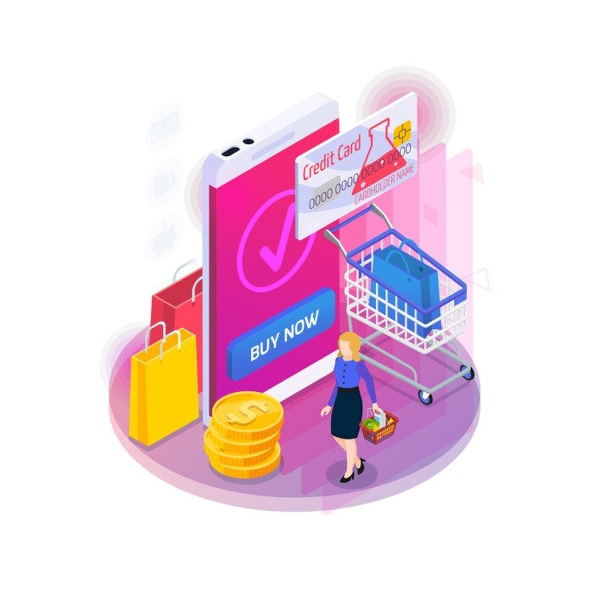

الاسم: ندى محمد إبراهيم عبد الرؤف
سيكشن:162
الكود:2503607
التجارة الإلكترونية بقت جزء أساسي من حياتنا، كلنا بنشتري من على النت سواء من أمازون أو نون أو جوميا أو حتى صفحات الفيسبوك. الفكرة بدأت سنة 1994 لما أمازون باع أول كتاب، والناس كانت مستغربة ازاي اشتري من غير ما أشوف. مع الوقت الناس اتعودت خصوصا مع دفع عند الاستلام وضمان استرجاع. في مصر الموضوع كبر جدا، حجم التجارة وصل لأكثر من 8 مليار دولار سنة 2024 حسب تقرير وزارة الاتصالات، بسبب انتشار الموبايلات وتطبيقات زي فودافون كاش وفوري
| النوع | الاختصار | مثال |
|---|---|---|
| شركة لعميل | B2C | امازون يبيع للعميل، الدفع عند الاستلام |
| شركة لشركة | B2B | شركة تبيع لشركة اخرى |
| عميل لعميل | C2C | فيسبوك ماركت، OLX |
| عميل لشركة | C2B | مستقل يبيع خدمة لشركة |
1- كتالوج المنتجات: كل منتج ليه صفحة فيها صور عالية الجودة، أمازون بتعرض 6 صور وفيديو. 93% من العملاء بيشوفوا الصور أولا
2- الوصف التفصيلي: خامة ومقاس ولون وطريقة استخدام، كل ما كان مفصل كل ما زادت الثقة.
3- السعر والعروض: سعر واضح مع خصم، واشتري 2 وخدي التالت مجانا أو شحن مجاني فوق 500 جنيه.
4- التقييمات: عملاء اشتروا قبل كده بيدوا نجوم من 1 لـ 5، 84% بيثقوا في التقييمات.
5- المنتجات المقترحة: ذكاء اصطناعي يقترح حاجات مشابهة، بيزود المبيعات 35%.
6- حالة التوفر: بيوضح هل متوفر ولا خلص، لو باقي قطعتين بيكتب باقي قطعتين فقط.
-إضافة للسلة، 2- صفحة السله بتحسب الإجمالي، 3- إنشاء حساب بالاسم والعنوان، 4- اختيار الدفع: في مصر 70% دفع عند الاستلام، أو فيزا عبر Paymob وفوري، أو فودافون كاش، أو تقسيط Valu، 5- تأكيد الطلب برسالة فيها رقم الطلب، 6- التجهيز والشحن عبر بوسطة أو مايلرز مع تتبع لحظي، 7- ما بعد البيع إرجاع خلال 14 يوم حسب قانون حماية المستهلك.
التقنيات والخلاصهFrontend: HTML للهيكل، CSS للألوان والخطوط، JavaScript للتفاعل مع الضغطات، Bootstrap للموبايل. Backend: MySQL لتخزين البيانات، PHP أو Python لتنظيم الطلب، استضافة ودومين. الأمان: SSL لتشفير الفيزا. الخلاصه اللي بينجح هو اللي بيهتم بكل التفاصيل من تصوير حلو ووصف مفصل ورد بسرعة وتوصيل في معاده.